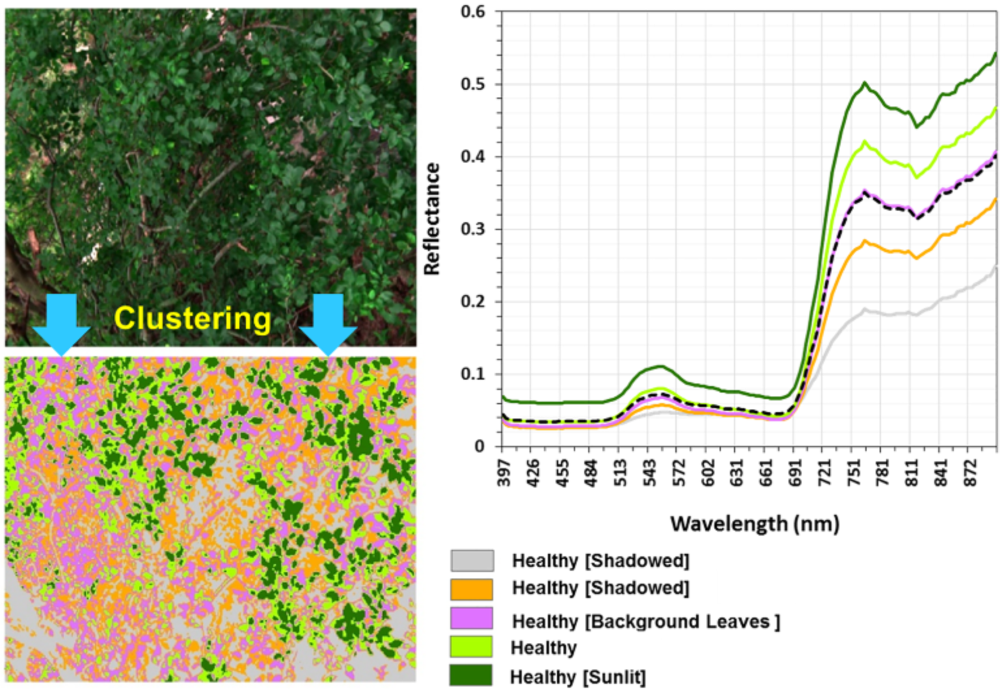
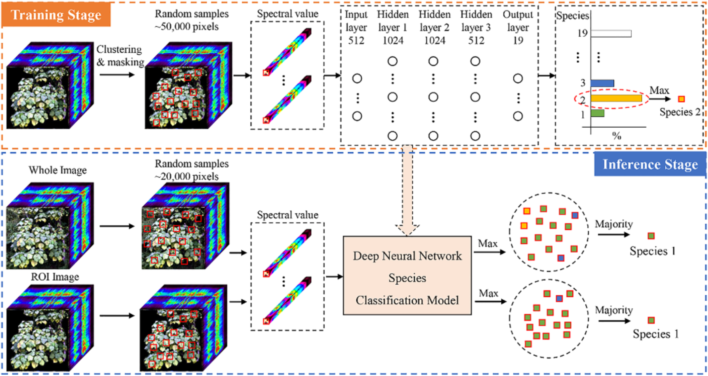

WEEK 1
An Introduction to Remote Sensing
This is a learning diary of CASA0023 WEEK 1, the lecture presentation is here, and the practical material is here.
1 Summary

1.1 Remote sensing
Definition
NASA defines remote sensing as acquiring information from a distance, interchangeable used with Earth Observation or EO.
Data acquisition
This is achieved through sensors mounted on a platform, e.g. satellites, planes (aerial imagery), drones, phones, free standing on the ground or sea (with hand held devices), there are more than 150 satellites in orbit carrying sensors.
Advantages
- Mass of data: satellites collect data on the same points on Earth every day to every 16 days
- Frequency of update and less reliance on authorities (e.g. London Atlas)
- More free resources to process large volumes of data (e.g. Google Earth Engine)
Types of sensor
Passive sensor
- Use energy that is available
- Don’t emit anything
- Usually detecting reflected energy from the sun
- Energy is in electromagnetic waves…
- Such as: Human eye, camera, satellite sensor
Active sensor
- Have an energy source for illumination
- Actively emits electormagentic waves and then waits to receive
- Such as: Radar, X-ray, LiDAR
1.2 Electromagentic waves
- Waves of an electromagnetic field, travel through space and carry radiant energy =
Electromagnetic radiation (EMR). Waves are part of the EMR spectrum. - Energy carried by EMR waves =
radiant energy - Energy per unit of time =
radiant flux - Energy from the sun =
incoming short wave radiationorshortwave radiation - Energy (solar power) from the sun per unit area per unit time (from electromagnetic radiation) =
solar irradiance(per unit time - flux) - Energy leaving a surface per unit area per unit time =
Exitance (emittance)(per unit time - flux) - Flux means time here.
Electromagnetic radiation (EMR)
EMR has both electric and magnetic fields, propagates (moves) as waves: c = vλ
c= velocity of light 3 x 10^8 meters per secondv= frequency, rate of oscillationλ= wavelength, distance between two crests
EMR isn’t automatically reflected. It experiences a number of changes prior to hitting the sensor
Surface: Energy being absorbed by the surface and being transmitted through the surfaceAtmospheric: Energy can be scattered by particles in the atmosphere
1.3 Interacting with Earth’s surface
Atmospheric scattering
Rayleigh= particles are very small compared to the wavelengthMie= particles are the same size compared to the wavelengthNon selective= particles are much larger than the wavelength
Synthetic Aperture Radar (SAR)
- Radar collects at longer wavelengths than optical sensors - pass through clouds that have smaller particle sizes (wavelength dictates how far it can penetrate into medium)
- Has it’s own bands - e.g. P, L, S, C, X, Ku, K
- Collects data at night
Bidirectional Reflectance Distribution Function (BRDF)
- View (e.g. sensor) and illumination (e.g. sun) angles can change
- Energy being reflected from the surface that is smooth or diffuse
Polarization
Definition
Applicable to Radar: Electromagnetic waves are polarized and the direction depends on the oscillation of the electromagnetic field. When they are reflected from the surface the waves can be linked to surface properties - roughness, shape, orientation, moisture, salinity, density.
Different ploarizations
Single polarization: same polarization transmitted and received = 1 horizontal (or vertical)Dual polarization: One sent, different one received = transmits and receives both horizontal and verticalQuad polarization: system can transmit and receive four types = emitted in horizontal (H) and received in horizontal (H)
1.4 Remote sensing data
Data formats
- band interleaved by line (BIL)
- band sequential (BSQ)
- band interleaved by pixel (BIP)
GeoTIFF (most common)
Four resolutions
Spatial= the size of the raster grid per pixel (e.g. 20cm or 30m)Spectral= the number of bands it records data in…more soonTemporal= the time it revisits (e.g. daily, every 7 days, on demand)Radiometric= identify differences in light or reflectance, in practice this is the range of possible values.

Type of orbit
geosynchronous orbit (GSO)= satellite matches the Earth’s rotationgeostationary orbit= holds same position, usually only for communications but some sensors are geostationary.
2 Application
This week’s lecture is mainly about the basic knowledge of remote sensing and Electromagnetic radiation (EMR), so I would like to introduce some of the remote sensing applications based on spectral characteristics here.
2.1 Remote sensing applications based on spectral features
Remote sensing uses spectral features to identify, classify and analyse a variety of features on the surface or in the atmosphere. Remote sensing has many applications using spectral features：
In the field of
agriculture, the spectral characteristics of vegetation can be used to monitor the growth of crops, damage, yield prediction, etc.In the field of
environmental, the spectral characteristics of water bodies, soil and atmosphere can be used to monitor water quality, soil types, pollutant types and concentrations, etc.In the field of
geology, the spectral characteristics of rocks, minerals, etc. can be used to detect mineral resources, geological formations, seismic activity, etc.In the field of
urban planning, the spectral characteristics of buildings, roads, etc. can be used to extract urban spatial information, assess the level of urban development and influencing factors, etc.
The specific application methods of remote sensing based on spectral features in the field of urban planning are mainly as follows:
Using remote sensing images to
obtain informationon the current situation of land use, analyse the structure and spatial distribution characteristics of urban land use, and provide basic data for urban planning.Using remote sensing images for urban
ecological environment evaluation, monitoring urban heat island effect, air quality, tree health, water quality and other environmental indicators, and providing ecological guarantee for urban planning.Use remote sensing imagery for urban
construction change monitoring, identifying the impact of urban construction activities on land use, and providing dynamic management for urban planning.
2.2 Application case
Characterizing and classifying urban tree species using bi-monthly terrestrial hyperspectral images in Hong Kong
Sourse: Abbas et al. (2021)
Urban trees exhibit a wide range of ecosystem services that have long been unveiled and increasingly reported. The ability to map tree species and analyze tree health conditions would become vividly essential. Remote sensing techniques, especially hyperspectral imaging, are being evolved for species identification and vegetation monitoring from spectral reponse patterns.

In this study, a hyperspectral library for urban tree species in Hong Kong was established comprising 75 urban trees belonging to 19 species. 450 bi-monthly images were acquired by a terrestrial hyperspectral camera (SPECIM-IQ) from November 2018 to October 2019. A Deep Neural Network classification model was developed to identify tree species from the hyperspectral imagery with an overall accuracy ranging from 85% to 96% among different seasons. Representative spectral reflectance curves of healthy and unhealthy conditions for each species were extracted and analyzed. This can be used to identify urban trees and monitor their health.
